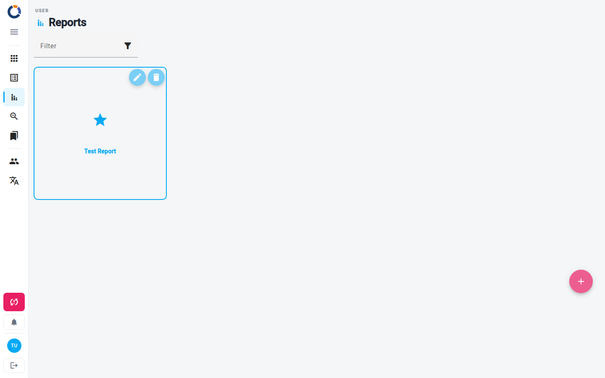

Informes
El área de Informes es tu centro para acceder a todos los esquemas de informes disponibles. Un esquema de informe define la estructura y el contenido de un informe que se puede generar a partir de los datos recopilados. Desde aquí, puedes explorar los esquemas y acceder a los informes que ya se han creado para cada uno.

Los esquemas de informes se crean a partir de un formato basado en Excel llamado XLSReport, o se generan automáticamente a partir de un esquema de formulario (consulta Informes automáticos). Para crear uno a partir de un archivo, primero preparas un archivo XLSReport y luego lo importas en Dino. Para conocer el procedimiento completo, consulta Editar esquema de informe.
Explorar esquemas de informes
Cuando abres la página de Informes, ves una tarjeta por cada esquema de informe al que tienes permiso de acceso. Las tarjetas se ordenan alfabéticamente por la etiqueta del esquema.
Para encontrar un esquema específico:
- Usa el campo Filtrar en la parte superior de la página.
- Escribe cualquier parte del nombre o la etiqueta del esquema.
- La lista se filtra mientras escribes, mostrando solo los esquemas que coinciden.
Para abrir los informes de un esquema, haz clic en cualquier parte de su tarjeta.
En cada tarjeta que puedas editar, los íconos de la esquina superior derecha te permiten gestionar el esquema directamente:
- Editar (ícono de lápiz) — abre el esquema para editarlo. Consulta Editar esquema de informe.
- Eliminar (ícono de papelera) — elimina el esquema después de que confirmes. Un esquema que todavía tiene informes no se puede eliminar: elimina primero sus informes.
Un ícono de huella digital en una tarjeta significa que el esquema de informe es único: solo puede producir un informe para un conjunto exacto de métricas determinado. Si intentas crear un informe que ya existe para esas métricas, Dino no creará un duplicado.
¿Aún no hay esquemas?
Si ves el mensaje "There are not any Reports currently available", todavía no se ha creado ningún esquema de informe ni se ha compartido contigo. Pídele a tu administrador de Dino que cree uno, o agrega uno tú mismo si tienes permiso.
Agregar un nuevo esquema de informe
Puedes empezar a crear un nuevo esquema de informe desde la página principal de Informes.
- Haz clic en el botón + (Add new Reports schema) en la esquina inferior derecha de la pantalla. Solo se muestra si tienes permitido crear esquemas de informes.
- Sigue los pasos descritos en Editar esquema de informe.
Abrir los informes de un esquema
Al hacer clic en la tarjeta de un esquema, accedes a la lista de informes generados a partir de ese esquema. Desde allí puedes:
- Explorar los informes existentes en una tabla, con detalles como el usuario que creó el informe, el nombre del informe y el rango de fechas recopiladas.
- Filtrar y buscar en la lista para acotar los informes que necesitas. Usa la búsqueda por palabra clave, los campos de rango de fechas y el botón Filtros para condiciones más avanzadas. También puedes guardar un conjunto de filtros como preajuste y aplicarlo de nuevo más tarde.
- Abrir un informe para revisarlo: pasa el cursor sobre su fila y haz clic en el ícono Ver (ojo), o selecciona la fila y haz clic en Ver en la barra de acciones encima de la tabla. Consulta Editar informe.
- Eliminar un informe que ya no necesitas: selecciona su fila y luego haz clic en Eliminar en la barra de acciones.
Para crear un nuevo informe a partir del esquema seleccionado, haz clic en Agregar nuevo informe encima de la tabla. Los informes que usan prompts de IA consumen DINO-AI Tokens. La cantidad de tokens que usará el informe se muestra junto al botón, así siempre sabes el costo antes de empezar.
Tokens insuficientes
Si no tienes suficientes DINO-AI Tokens en tu cuenta, Dino no iniciará el informe y mostrará un mensaje pidiéndote que agregues más tokens. Agrega tokens a tu cuenta e inténtalo de nuevo.
Qué puedes hacer después
Desde el área de Informes, puedes continuar con estas tareas:
- Editar informe — Revisa un informe y expórtalo.
- Editar esquema de informe — Crea nuevos esquemas de informes o edita los existentes para definir qué aparece en tus informes. Esto normalmente requiere permisos de administrador.
- Agregación — Explora los datos de todos tus esquemas de formulario en una sola lista.